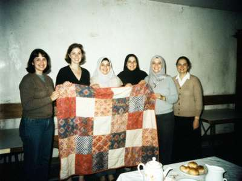

every Thursday, 10 a.m. to "when the tea runs out"
Hi y'all! I'm Heather, from Abilene, Texas. My husband Rick is a contractor out at the base and we've been in Talas since spring 2000. I brought my sewing machine, two suitcases of fabric (Rick says three) and absolutely no idea what I'd do with myself all day.
That fall I met Gulchehra at the bazaar, buying silk. She sells atlas, the bright ikat silk with the zigzag patterns, and I just about fainted. I asked her if anybody would mind if I cut it up into a quilt. She laughed for about a full minute and then said "show me". The next Thursday she brought her sister and her neighbor, I brought two ladies from the base housing, and that was the start of the Talas Quilting Circle.

Our first big group quilt, "Silk Road Star", finished June 2001. That's me second from left.
Who we are
Right now we're 14 regulars: 6 Americans (base families and two teachers), 6 Iradi ladies, one Russian lady (Galina, who does the most beautiful cross-stitch you ever saw) and Yuko, who is Japanese and married to a TSU professor. We meet in the hall of the parish of St. Tomas, because Father lets us have it for free if we make something for the Christmas bazaar. Fair deal!
The "Talas block"
The Iradi ladies taught us their shyrdak felt patterns, the ram's horns (kochkor muyuz) and the mountain shape, and we figured out how to do them as appliqué. So now we have our own block that we call the Talas block: a ram's-horn appliqué in silk on calico, set in a nine-patch. I'll post a pattern when Rick figures out the scanner.
The Talas block (I drew it on the computer, the real one is prettier)
What we've made
- Silk Road Star (2001) — raffled at the base Fourth of July picnic, $640 for the children's home in Talas
- Twelve baby quilts for the maternity hospital
- Gulchehra's daughter's wedding quilt — the ladies say it's now part of her sep (dowry), which I think is the nicest thing anybody's ever said about my sewing
- One very ugly practice quilt we don't talk about
Want to come?
Everybody's welcome, no experience needed, men too (none so far). Bring scissors and a cup. Gulchehra will sell you silk, and she'll give you the "circle price" if you ask nicely. The tea is Iradi tea, which means you'll be offered more until you turn your cup upside down.
E-mail me at heather_quilts@attelkom.net or just come on Thursday.
Happy stitching! — Heather
updated 19 August 2001 · Galina's cross-stitch page · St. Tomas Youth Group